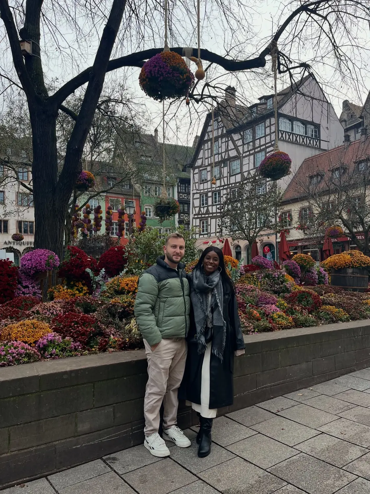

The highlight01
The Christmas markets & the great tree
📍 Place Kléber & the old town
Strasbourg calls itself the Capitale de Noël, and it earns it. Wooden chalets fill square after square, and the centrepiece is the giant Christmas tree at Place Kléber: one of the tallest in Europe. Wander the stalls, follow the lights through the old town, and let yourself get pleasantly lost. A guided walking tour with a local is the easiest way to string together the cathedral, the squares and the market history in one go.
Oldest market in FranceEndless lights